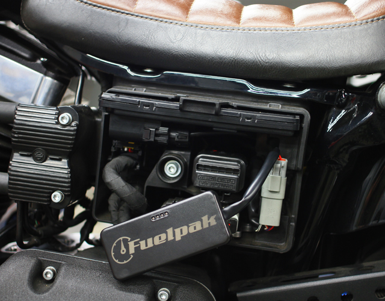
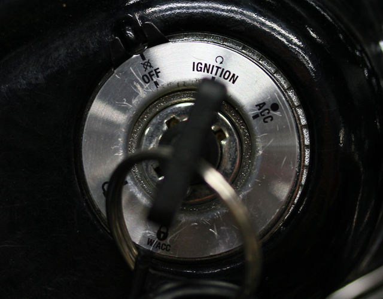
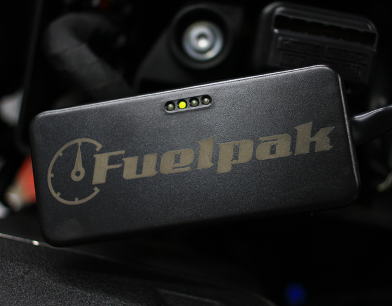
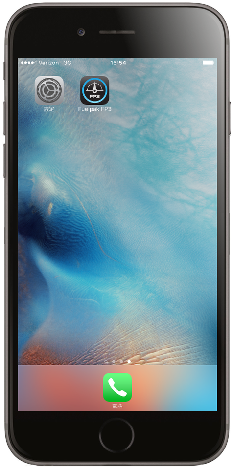
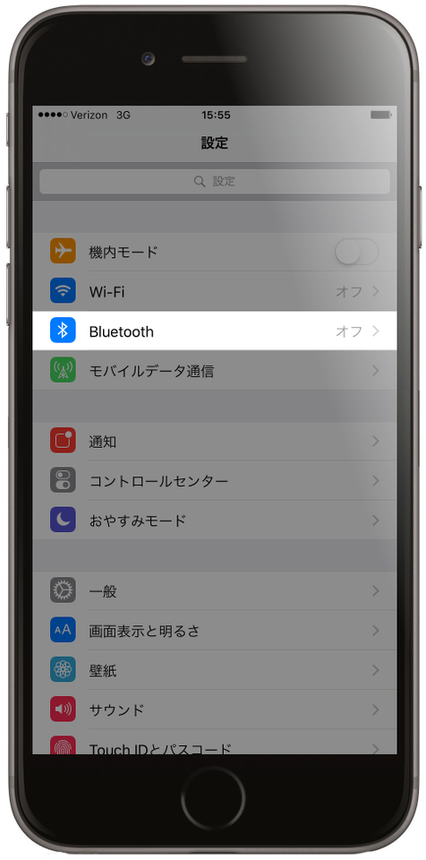
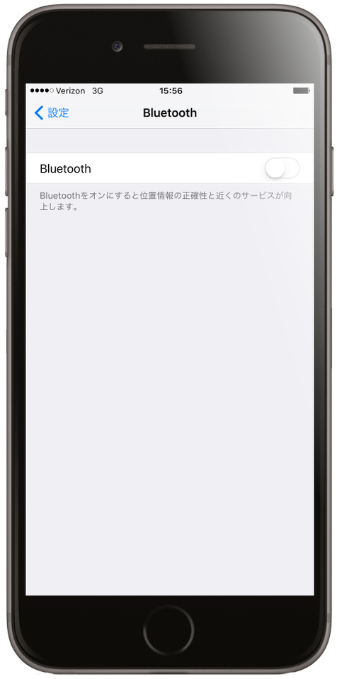
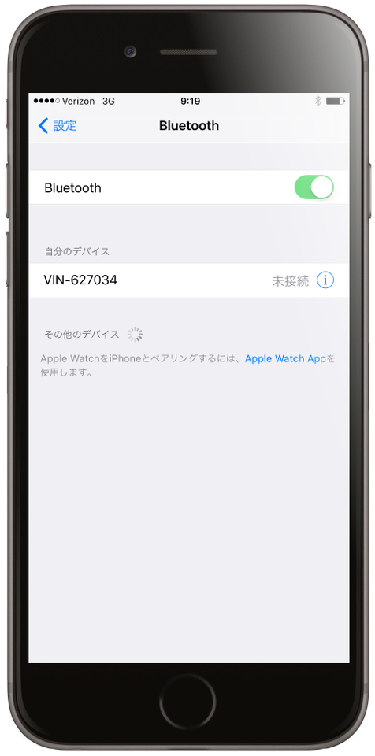

1. あなたのバイクの診断ポートにFP3をインストールします。
2. ﾊﾞｲｸのﾒｲﾝｽｲｯﾁｷｰをｵﾝにします
3. 数秒後に、1のLEDがゆっくり点滅します。
4. あなたのiOSデバイス、設定へ
5. Bluetooth選択.
6.（それが既にされていない場合）のBluetoothをオンにします。ﾄﾞﾛｯﾌﾟﾀﾞｳﾝして利用可能デバイスを見つけ、それを選択します。
7. 一旦接続するとFP3のアプリに移動します。アプリであなたのﾊﾞｲｸに接続してFP3用ハードウェアを認識する必要があります。
